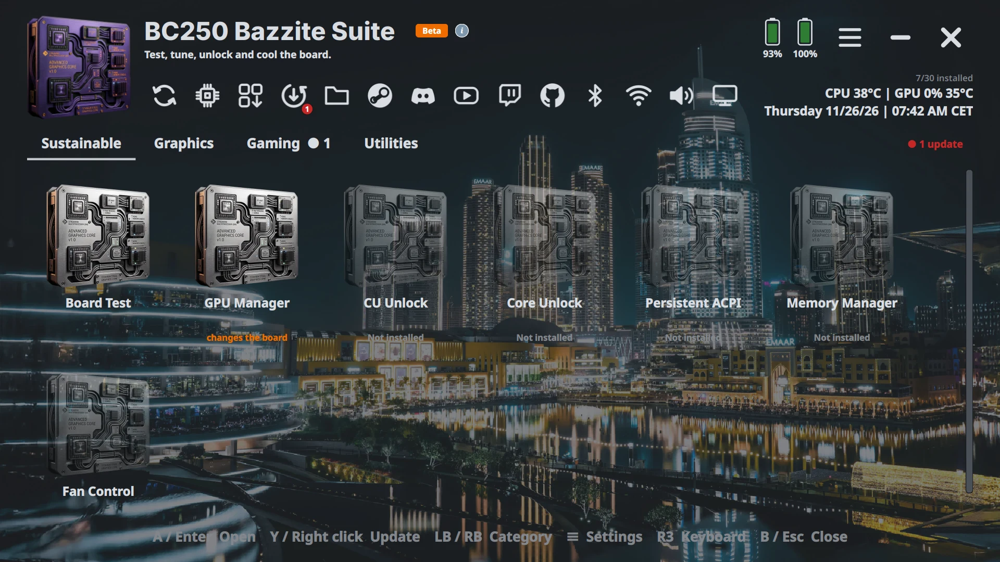
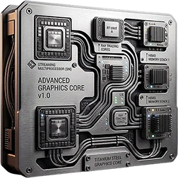

Sustainable
Test it, tune it, unlock it and keep it cool.


Board Test
Know your board inside out. Diagnostics, a stress test and benchmarks come with every portal.

GPU Manager
Take control of the GPU governor. Tune it, find safe points, and keep profiles and backups.
Changes the board
CU Unlock
Unlock more compute units with confidence. It tells bad CUs apart from an unstable unlock.
Changes the board
Core Unlock
Go for 8 cores and 16 threads. It finds bad cores before you make the unlock stick.
Changes the board
Persistent ACPI
Give the CPU its C-states and frequency scaling, through a persistent ACPI override.
Changes the board
Memory Manager
Memory set for your games. It sets the VRAM split, GTT and swap, and learns from the games you play.
Changes the board
Fan Control
Stay cool under load. A thermal guard warns, cools and shuts down cleanly at a critical temperature.
Changes the board